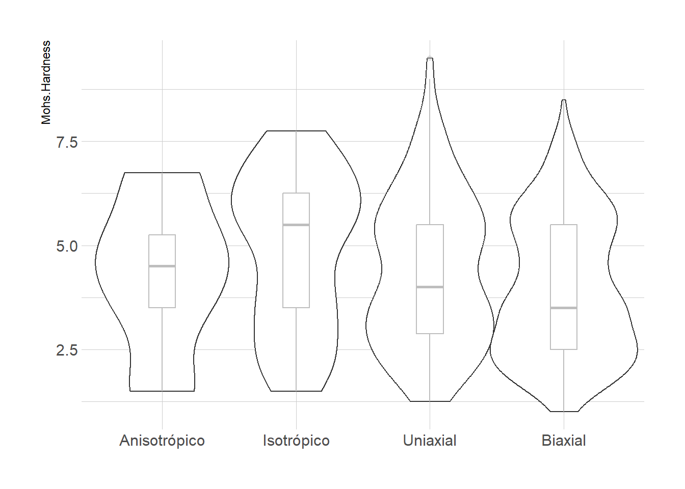
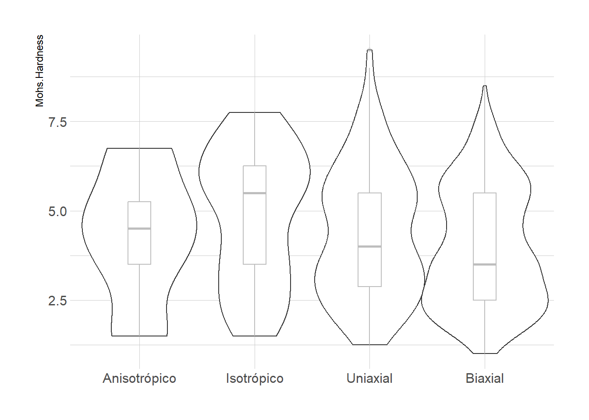
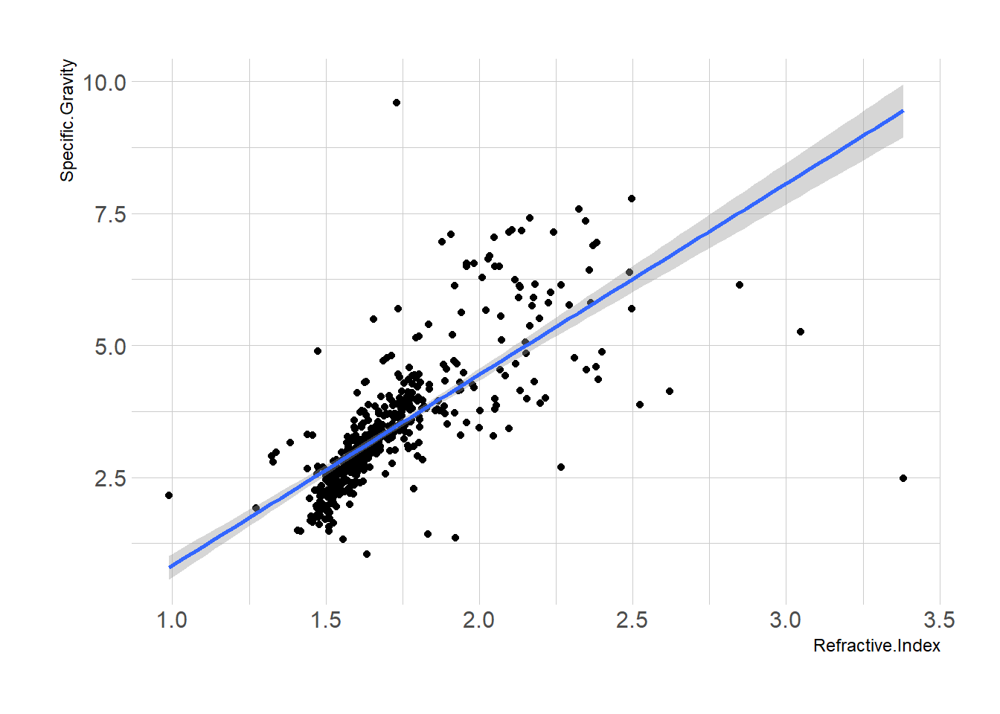

[[1]]
[[2]]
[[3]]
[[4]]
[[5]]
[[6]]
[[7]]
[[8]]
[[9]]Este dataset cuenta con datos ópticos y químicos de diferentes minerales que se estudian para determinar diferentes propiedades utilizadas en la industria electrónica y de materiales.
Algunas de las variables presentaban un valor 0 en lugar de un NA por lo que se decidió reemplazarlo por NA, estas variables son: estructura cristalina, dureza de Mohs, diafanidad, gravedad específica, propiedad óptica, dispersión, cantidad de átomos, masa y volumen molar y densidad.
A continuación se muestran los gráficos de violín y su diagrama de caja para identificar su distribución y valores atípicos.
En las medidas de gravedad específica, índice de refracción, dispersión, cantidad de iones de agua, cantidad de átomos, masa y volumen molar y densidad calculada tienen valores extremos, pero no corresponden a valores atípicos si no a valores propios de los minerales.
Además, en las distribuciones se observan concentraciones de valores cercanos a cero en las propiedades: índice de refracción, cantidad de iones de agua, cantidad de átomos y volumen molar.
[[1]]
[[2]]
[[3]]
[[4]]
[[5]]
[[6]]
[[7]]
[[8]]
[[9]]Mediante el gráfico de dispersión se puede observar una correlación positiva entre el índice de refracción y la gravedad específica, es decir que a medida que aumenta el índice de refracción, también aumenta la gravedad específica.

Como se observa en el gráfico de violines, no se encuentran diferencias entre las medias de índice de refracción de los distintos tipos de estructura cristalina.
En el gráfico de calor se puede observar un grupo de alta dureza en minerales con una masa molar de entre 500 a 800 y entre 0 y 0.25 volumen molar.

Existe una relación positiva entre el índice de refracción y la gravedad específica que se confirma con un índice de correlación de Pearson de 0.72.
No se encuentran diferencias entre las medias de índice de refracción de los distintos tipos de estructura cristalina.
Finalmente se observó un grupo de alta dureza en minerales con una masa molar de entre 500 a 800 y entre 0 y 0.25 volumen molar.